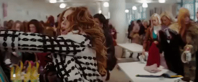
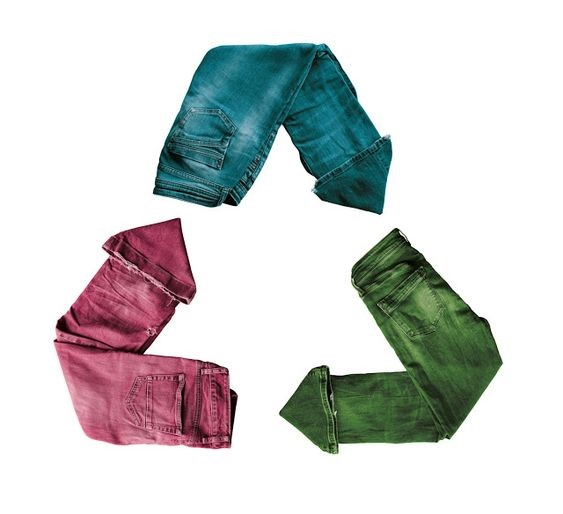
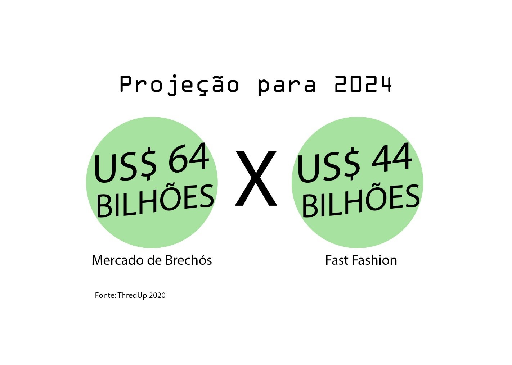
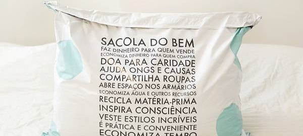

Alguma vez você já parou, olhou para o seu armário e viu aquele amontoado de peças que foram usadas pouquíssimas ou nenhuma vez? Sim, isso é normal para maior parte da população.
Antes de mais nada, vamos entender um pouco a origem do problema.
Após o final da segunda guerra mundial, a sociedade dos anos 50 dos Estados Unidos começa a desejar o consumo e acumulação de bens materiais de forma frenética. O estilo de vida americano, também conhecido como American Way of Life, vira inspiração para muitas pessoas, inclusive fora do país, refletindo bastante o que vivemos hoje. Esta expressão é aplicada a um estilo de vida que funciona como uma alta afirmação de bem estar, onde o indivíduo compra diversos itens para mostrar para outras pessoas o quão importante ele é.

O consumo se transformou em um verdadeiro lifestyle entre as pessoas. E as empresas aproveitaram este momento para fabricar produtos com pouca durabilidade e para desejo instantâneo, representando assim um amontoado de peças paradas no armário. Afinal precisamos seguir fielmente as tendências, correto? Errado.

Hoje em dia existe uma onda de crescimento de roupas de segunda mão, propagadas principalmente pelos brechós em lojas físicas e online. Para quem vende, ter a possibilidade de repassar uma peça que está sem utilização; e para quem compra, criar looks sem a necessidade de fabricação de novas peças. Diferente do passado, a consciência ambiental está sendo cada vez mais levada a sério, fazendo com que os consumidores a se preocuparem com o seu impacto no planeta.
No relatório publicado em março de 2020 pelo ThredUp, o aumento de consumo de brechós on-line aumentou exponencialmente e acelerou este processo de conscientização. Para se ter uma ideia deste aumento, a projeção de crescimento inicial deste mercado era de US$ 64 bilhões até 2028 (relatório de 2019), e atualmente a estimativa é chegar neste mesmo número até 2024, ultrapassando inclusive o varejo tradicional (Fast Fashion).

Algumas curiosidades
1 - Há mais compradores de segunda mão do que nunca!
70% das mulheres fazem ou estão abertas a fazerem compras de produtos de segunda mão.
2 – A situação atual do mundo desencadeará um futuro de moda mais sustentável?
Cerca de 70% de todos os consumidores concordam que lidar com as mudanças climáticas é mais importante agora do que nunca.
3 - Revenda é a maneira mais ecológica de repassar roupas não utilizadas
Dar uma segunda vida a um vestido reduz seu impacto sobre o CO2 em 79%, pois evita a fabricação de um novo item. Numa sociedade em que uma peça é usada pouquíssimas vezes antes de ser deixada de lado, estender a sua vida útil acaba sendo cada vez mais importante.
Se você ainda não aderiu a esse hábito, indico dar um primeiro passo. É uma sensação incrível ajudar o próximo, o meio ambiente, e ainda ter a oportunidade de ter aquela peça única e cheia de história.

Que tal conhecer a nossa Sacola do Bem no Repassa? Para entender mais, acesse nosso site e redes sociais.
Fontes:
https://www.thredup.com/resale/#resale-growth
https://www.thredup.com/resale/static/f278a9a9b05dc25b2f046483695344a3/6050d/1b-chart.png
– projeção 2020 atualizado
https://www.etiquetaunica.com.br/blog/moda-sustentavel-e-moda-consciente/
Google Imagens e Pinterest
Escrito por Helena Napoleone, 02 de Agosto de 2020